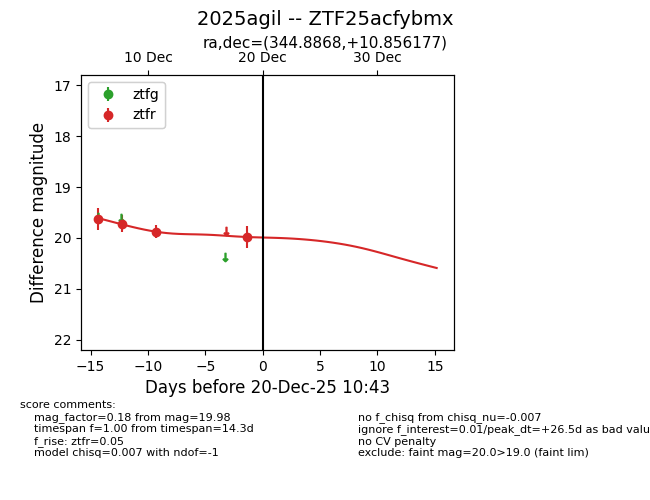
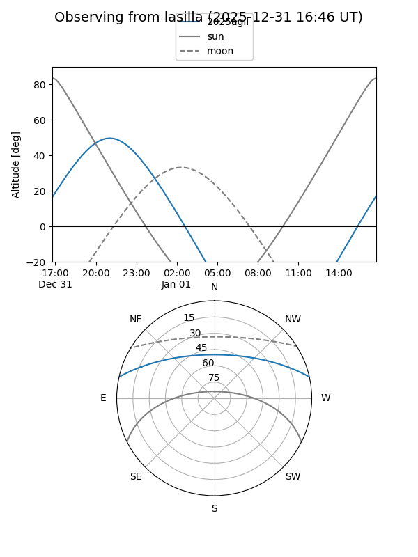
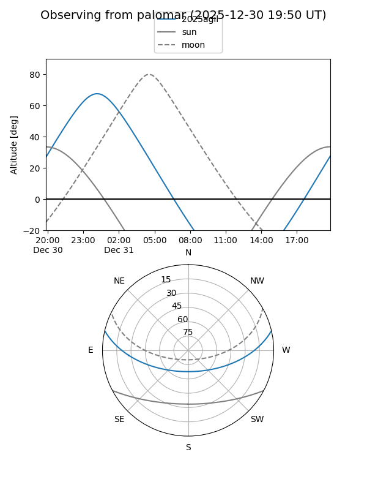

2025agil
Target 2025agil at 2025-12-18 11:17
Aliases and brokers:
FINK: fink-portal.org/ZTF25acfybmx
Lasair: lasair-ztf.lsst.ac.uk/objects/ZTF25acfybmx
ALeRCE: alerce.online/object/ZTF25acfybmx
TNS: wis-tns.org/object/2025agil
YSE: ziggy.ucolick.org/yse/transient_detail/2025agil
alt names
ZTF25acfybmx (ztf,fink_ztf)
2025agil (tns,yse)
Coordinates:
equatorial (ra, dec) = 344.8868,+10.85618
equatorial (HMS+DMS) = 22:59:32.84,+10:51:22.24
galactic (l, b) = (83.6478,-43.31926)
Photometry
last ztfr=19.88
3 ztfr detections
Lightcurve

Visibility


Additional plots